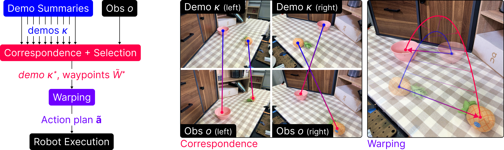
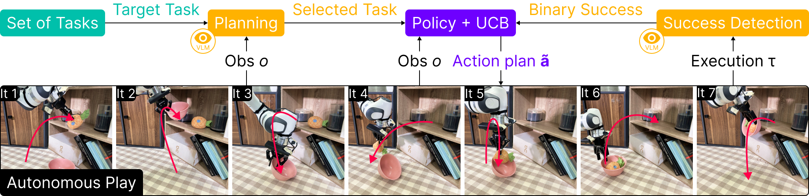
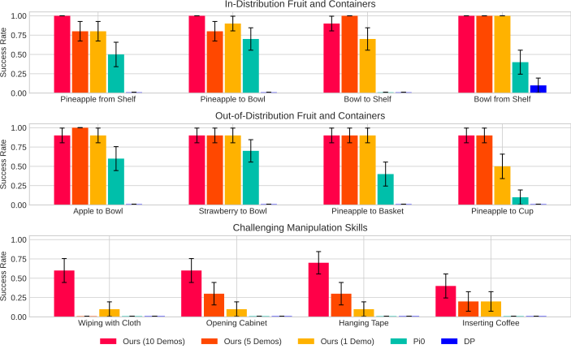
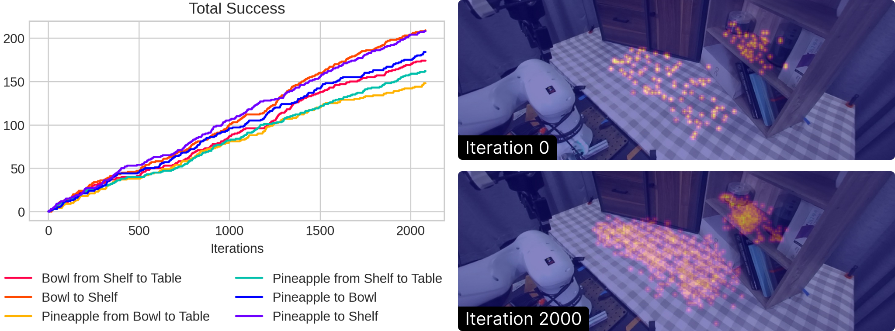
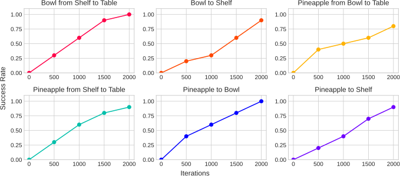

University of Pennsylvania
The ability to conduct and learn from self-directed interaction and experience is a central challenge in robotics, offering a scalable alternative to labor-intensive human demonstrations. However, realizing such "play" requires (1) a policy robust to diverse, potentially out-of-distribution environment states, and (2) a procedure that continuously produces useful, task-directed robot experience. To address these challenges, we introduce Tether, a method for autonomous play with two key contributions. First, we design a novel non-parametric policy that leverages strong visual priors for extreme generalization: given two-view images, it identifies semantic correspondences to warp demonstration trajectories into new scenes. We show that this design is robust to significant spatial and semantic variations of the environment, such as dramatic positional differences and unseen objects. We then deploy this policy for autonomous multi-task play in the real world via a continuous cycle of task selection, execution, evaluation, and improvement, guided by the visual understanding capabilities of vision-language models. This procedure generates diverse, high-quality datasets with minimal human intervention. In a household-like multi-object setup, our method is among the first to perform many hours of autonomous real-world play, producing a stream of data that consistently improves downstream policy performance over time. Ultimately, Tether yields over 1000 expert-level trajectories and trains policies competitive with those learned from human-collected demonstrations.




